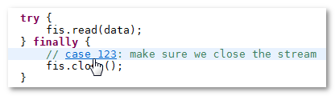
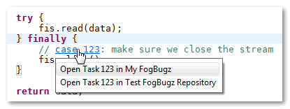
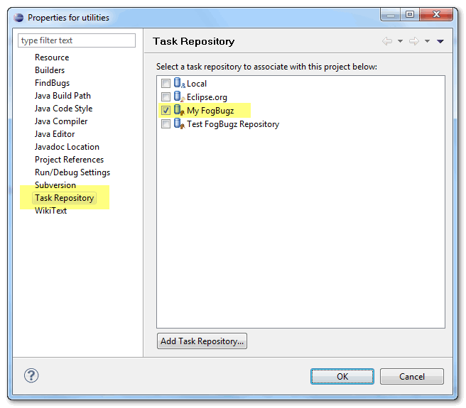
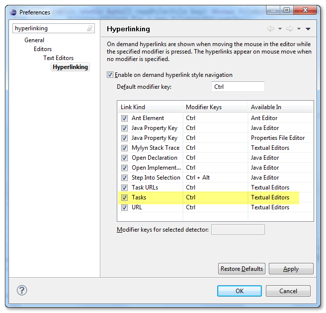

Case Hyperlinks in Text Editors
You can open referenced case directly from the text editor by holding down the Control or Command key and clicking the hyperlink
which appears under the mouse cursor:

If there are multiple FogBugz repositories configured in your workspace, you can choose the correct repository to open the
case from:

Each project may have its default repository configured in Task Repository part of Project Properties (available in main menu > Project > Properties):

Foglyn recognizes following formats of case references:
- Case 123
- Case: 123
- BugzID 123
- BugzID: 123
It is also possible to disable task hyperlinks or change required key in global Preferences dialog (in General > Editors > Text Editors > Hyperlinking page). Note that this option controls hyperlinks for all kinds of task repositories, not just FogBugz repository.
